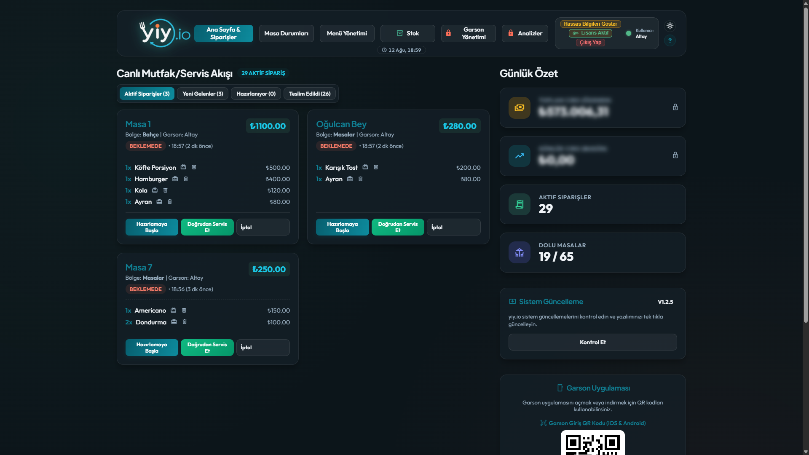
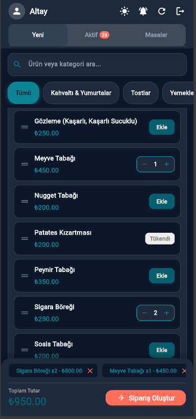

yiy.io, kafeler ve restoranlar için geliştirilmiş ultra hızlı, çevrimdışı (offline-first) çalışan masa & sipariş takibi platformudur. İnternet kesilse dahi işiniz asla durmaz!

"Bir sonraki referans işletmemiz siz olabilirsiniz!"
"Plaj ve masa siparişlerimizi garsonlarımız saniyeler içinde mutfağa aktarıyor. Yoğun sezonda internet kopsa bile kesintisiz çalıştık."
"Bir sonraki referans işletmemiz siz olabilirsiniz!"
Gereksiz aylık abonelik ücretleri ödemeden, işletmenize tam hakimiyet sağlayın.
Salon, Teras, Bahçe gibi farklı alanlardaki masalarınızın anlık doluluk durumunu, kalan hesap miktarını tek ekrandan görün.
Garsonlar herhangi bir akıllı telefon veya tabletten QR kod taratarak saniyeler içinde giriş yapabilir ve masada sipariş alabilir.
Verileriniz kendi bilgisayarınızdaki yerel veritabanında saklanır. İnternetiniz kopsa bile sipariş süreci kesintiye uğramaz.
Günlük toplam ciro, en çok satan ürünler, Nakit vs Kredi Kartı ödeme oranları ve masa bazlı sipariş geçmişi elinizin altında.
Karmaşık veritabanı sunucusu veya web hosting gerektirmez. Tek bir yiy-server.exe dosyası ile saniyeler içinde çalışır.
Müşteri ve ciro bilgileriniz hiçbir 3. taraf bulut sunucuya gönderilmez. Tüm veriniz %100 sizin denetiminizdedir.
Mobil garson arayüzü sayesinde pahalı ek sipariş terminallerine yatırım yapmanıza gerek kalmaz. Garsonlar kendi akıllı telefonlarından veya işletmeye ait tabletlerden sisteme bağlanabilir.

yiy.io, gerçek kafe ve restoran ortamlarında garsonların hızına hız katmak için tasarlandı.

Garson masadayken siparişi dokunarak seçer, onayladığı an mutfaktaki ve kasadaki ekrana yansır. Garsonun kasaya gitmesine veya kağıt sipariş fişi yazmasına gerek kalmaz.
Hiçbir karmaşık sunucu veya veritabanı ayarı yapmadan hemen kullanmaya başlayın.
Sağ üstteki "İndir" butonuna tıklayarak ZIP arşivini indirin ve bilgisayarınızda dilediğiniz bir klasöre çıkarın.
Klasör içindeki çalıştırılabilir dosyaya çift tıklayın. (Windows SmartScreen uyarısı verirse "Daha fazla bilgi > Yine de çalıştır" seçeneğine tıklayın).
Garson telefonunu işletme Wi-Fi ağına bağlayıp http://localhost:3001 adresindeki Garson QR Kodunu taratın!
Özel geliştirme talepleri, deneme lisansı veya doğrudan kurulum desteği almak için iletişime geçebilirsiniz.